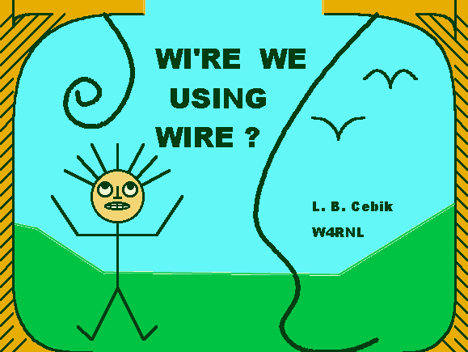
Wi're We Using Wire?
This talk, originally prepared for the 1997 Dayton FDIM Symposium, summarizes material discussed at greater length in the series "Antennas From the Ground Up," which appears in Low Down. Published episodes in this series are available at this site, should you wish greater detail on various points

For lower HF-band antennas, the reason for using wire antennas is simple: they work; they are cheap; and there is nothing better for most of our wallets. Understanding the dollar and work economy of wire antennas only requires that we look at Figure 1, a simplified sketch of typical wire antenna construction. There is not a lot of mechanical complexity in a wire antenna of the sorts we use on 80, 40, and 30 meters.
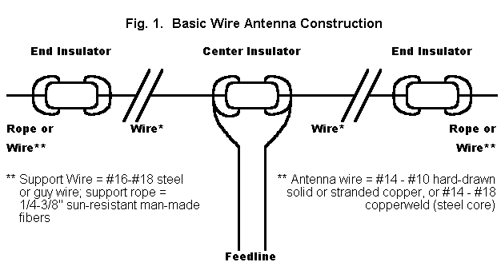
The more difficult answer to our question involves understanding what wire antennas do and why and how they do it. In fact, most hams have very little idea of how wire antennas work. Of course, once we master wire antennas, we have also mastered the hardest part of all antennas, so perhaps it pays to go back to basics and take a closer look at these marvels of simplicity.
After getting a few terms squared away, we shall look at three types of linear (straight-line) wire antennas: a. the center-fed wire; b. the off- center-fed wire, and c. the end-fed wire. It would be nice to add some loops, fans, fractals, and wire beams to our agenda, but there is so much to say about these three simple antennas, that the fancy wires will have to await another day.
I am always amazed by how many wrong things we teach new hams to believe about antennas. Hence, I have no choice but to begin all over again. Inevitably, I shall repeat things you already know, but that is necessary to provide a framework for a few things you may not yet have encountered. For example, antennas do not radiate, at least not in the sense most folks think about radiating. For example, that 80-meter dipole you are using on 40 meters is no longer a dipole. For example, no matter what shape you make a horizontal antenna, the elevation angle of maximum radiation will change hardly at all. For example, as I lower a resonant half wavelength dipole below a height of a half wavelength, the feedpoint impedance will exceed 75 ohms part way down and be lower than 75 ohm part of the way. If these teasers have not attracted your attention, then you just do not like wire.
The 1/2 Wavelength Resonant Center-Fed Dipole Wire Antenna
We are often taught that antennas are special devices, transducers that convert radio frequency alternating current energy into radiating electromagnetic fields. This teaching is only relatively true: antennas do the job better than most other electronic devices, but they all try. In fact, "conversion' is not really a precise word at all. Every instance of electrical energy has a field, and every field has associated electrical energy.
Moreover, antennas do not radiate outward in that sparky sense which we find in cartoons. Rather, they permit fields to expand from the wire without limit. A transmission line can be thought equally 1. as a waveguide confining electromagnetic fields or 2. as a conveyor of electrical energy from the source to the load. Figure 2 takes a field perspective on the transmission line and antenna situation. And if you do not believe electronic components radiate, think about why iron and ferrite toroidal cores are all the rage in RF circuitry.
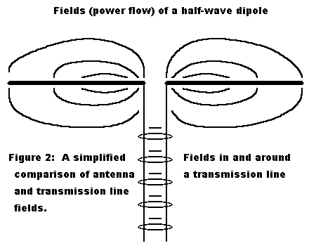
All of this preamble brings us to the 1/2 wavelength resonant center-fed dipole antenna. By shortening the name of the antenna to "dipole," we can make most new hams believe that it is the most basic antenna of all. When we give the antenna's full pedigree, its true nature appears: it is a rather sophisticated and complex device. To be certain we are all on the same wavelength, let's review what each part of the name means (see Figure 3).
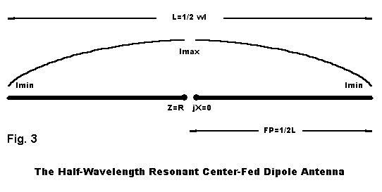
-
1. Dipole: the antenna is a dipole because it has two "poles," that is, regions of the antenna where the current goes from maximum to minimum.
-
2. Center fed: The antenna is fed at its exact center.
-
3. Half wavelength: the antenna is approximately 1/2 wavelength long.
-
4. Resonant: the feedpoint impedance, Z, which is ordinarily composed of resistive and reactive components (R +/- jX), is purely resistive.
What we think we know about dipoles is not much, but then we seem not to think we need to know much. The proper length in feet of a half wavelength resonant wire dipole is 468/F in MHz, and the feedpoint impedance is close to 70 ohms, with some decrease as we lower the antenna height. If you are content to live in the clouds, these old saws are fine; if you require more precision in your understanding, these bits of tradition do not live up to a half truth.
The following information is predicated on NEC-2/4 models, which means that they do not account for the terrain slopes in your area or the ground clutter in your yard. However, they are relatively accurate, even when translated to other frequencies, since antenna heights above ground are given as fractions of a wavelength. My examples will use #14 copper wire, so adjust longer for thinner wire and shorter for fatter wire.
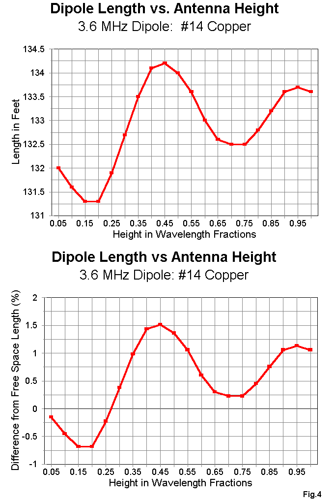
1. The length of a resonant half wavelength dipole never gets down to the formula. See Figure 4. But it does vary by a total of about 3' at 3.6 MHz as you change height above ground from 1/20th of a wavelength to a full wavelength. Precise resonance is not significant to the wire's performance as a radiator, but it is nice to know where resonance really is.
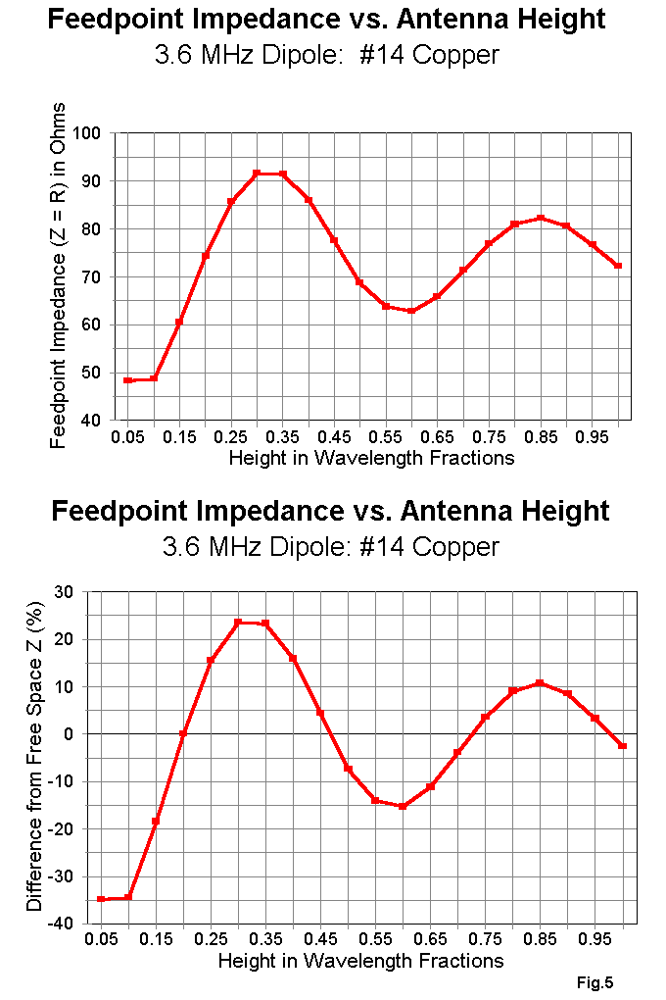
2. The feedpoint impedance at resonance also varies with height, going well above and well below the standard 70-ohm value as we move from 1 wavelength downward. See Figure 5. Again, your ground clutter may obscure this curve, but you can now see how the progression goes.
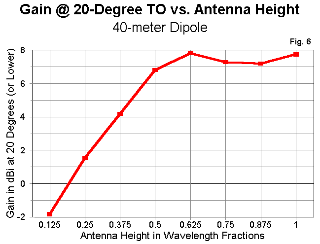
3. We all believe that low-angle radiation is important to making contact with distant stations. How well does a low dipole do? See Figure 6, a 40-meter dipole. (Remember, we can translate the numbers to other frequencies, since heights are in units of a fraction of a wavelength.) The resonant half wavelength dipole begins to do quite well as we increase its height from 3/8 wavelength to 1/2 wavelength. (Higher-angle radiation continues to dominate, which is why some folks prefer certain kinds of loops or beams for quieter DXing.) Note the dip in gain around the 3/4 wavelength height point. As we move an antenna upward, the lobe structure changes, and new lobes appear, often straight up.
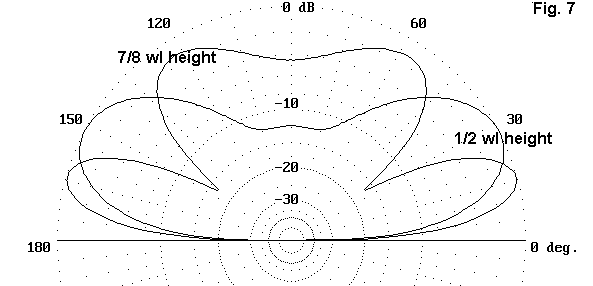
See Figure 7, which compares the elevation pattern of a dipole at 1/2 and at 7/8 wl. Much of the wire's energy at 7/8 wl is aimed at higher angles, nice for locals, but less helpful for DX.
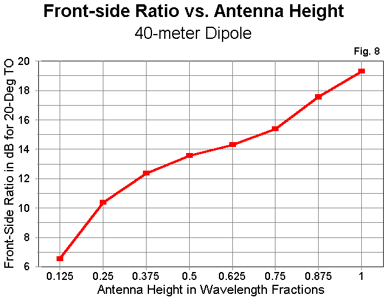
4. The traditional figure-8 pattern we associate with dipoles is mostly an illusion at low antenna heights. Figure 8 provides a graph of the front- to-side ratio of dipoles as we increase antenna height. Only above about 1/2 wavelength does the peanut shape of good side rejection appear. You do not need an inverted Vee at low heights on the low HF bands to have omnidirectional radiation; the dipole will do just fine. See Figure 9 for paired azimuth patterns at 22 degrees elevation for a graphic display of this fact.
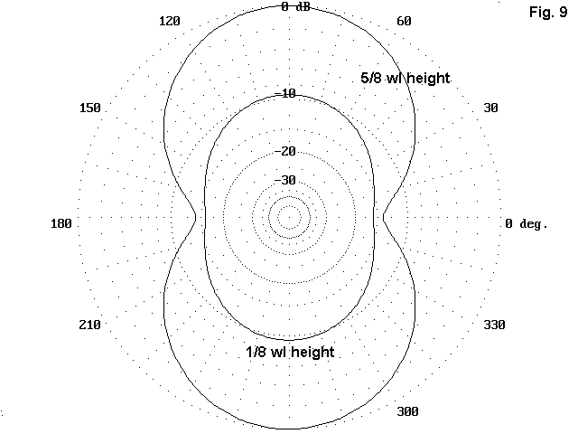
All this must mean that the dipole is a pretty bad antenna, right? WRONG! The resonant half wavelength dipole, even at relatively low antenna heights competes very well with everything folks have invented to compete with it. And usually at a fraction of the cost. Let's look at only two examples of the antenna's competitiveness.
Most dipole competitors demand that you place their antennas just so or the maker will not be responsible for the performance. Already I am suspicious, because with an ordinary dipole, you can twist and turn as necessary and still have almost all of the dipole's performance. There are two ways of bending a dipole, one a bit better than the other. See Figure 10. We can bend both elements in the same direction, whether down or to the same side. However, we lose a little of the antenna's radiation this way due to cancellation. The problem is insignificant until the horizontal main part of the element approaches 70% or less of the full length of the dipole.
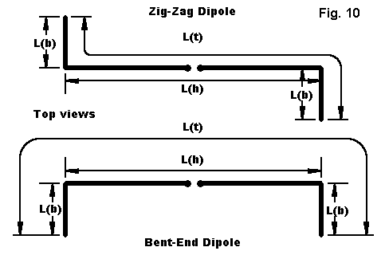
Zig-zagging the wire horizontally maintains most of the antenna's radiation more efficiently, but at a cost, as shown in Figure 11. The antenna pattern tilts toward the outside corners of the wire. Remember, though, that one person's cost is another person's profit. Suppose you can almost but not quite get the main lobe of your dipole broadside to Europe. Perhaps you can create a zig-zag that will move the pattern without requiring that you move the trees in your yard.
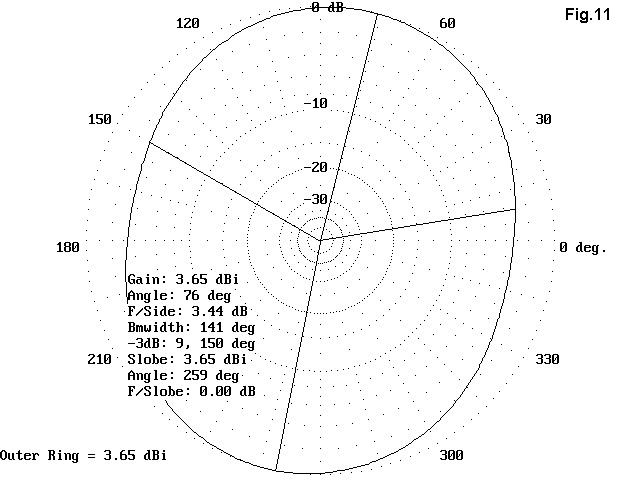
Of course, you can Vee the dipole in any direction, or slope the whole wire down a hill. In estimating the probability that the antenna will still act like a dipole, just be very honest with yourself. Ask yourself, "Does the antenna still look like a dipole?" If the answer is an honest, "Yes," then your likelihood of good dipole performance is high.
And, do NOT sell the performance of a dipole short. Top-wire-height for top-wire-height, among competitive wire antennas, the dipole can make a case for itself as top dog. Figure 12 displays the outlines of 5 antennas. One is our old friend the half wavelength resonant center-fed dipole. Three are loop antennas often proposed as alternatives to the dipole. All four are shown as side views, face-on to the antenna wire. The last is a simple wire Yagi, thrown in because it makes use of about 1 wl of wire, the same as the loops. (Incidentally, my model of this #14 copper wire antenna for 40 meters has a driven element 66' long, a reflector 70' long, and a spacing of 20', with a feedpoint impedance close to 50 ohms.)
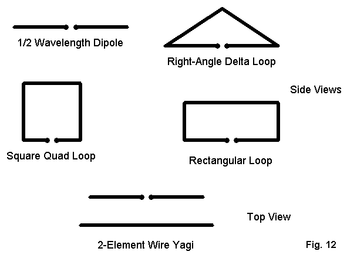
The rules of the following exercise are simple: all the antennas have their top wires (or the apex of the triangle) at the same height. This is based on the premise that with low wire antennas on the lower HF bands, we put them just as high as we can get them, not at some theoretical height.
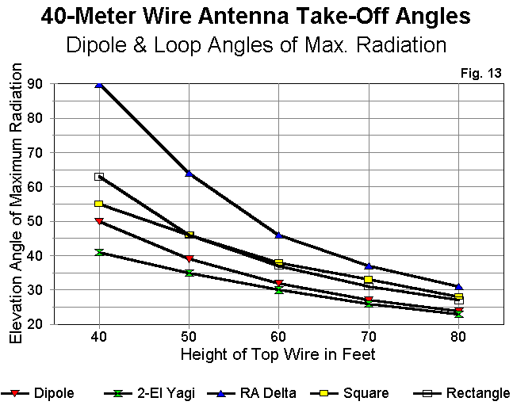
On these terms, Figure 13 tells an interesting story. The elevation angle of maximum radiation of the right-angle delta is highest because so much of the high-current high-radiation part of the antenna is so low compared to the top height. The square and rectangular loops have comparable performance, better than the triangle, but worse than the dipole. In fact, the only antenna of the group with a consistently lower elevation angle of maximum radiation is the wire Yagi. Of course, the Yagi maintains a special parasitical relationship between elements that tends to hold the elevation angle of maximum radiation lower.
In the end, then, the only good reason for choosing one of the loops, vertically oriented, but fed as horizontally polarized antennas, is because one lacks the full length needed for a dipole at the top height available. (Feeding the loops as vertically polarized antennas is another matter calling for another full session or a chapter in ON4UN's book on low band DXing.) The dipole holds its own and surpasses many of its competitors.
The Center-Fed "Dipole" on All Bands
Dipoles as resonant antennas are monoband affairs. To convert an 80- meter dipole to an all-band antenna (sometimes called a "doublet," but no longer a dipole except on one band), throw away the coax (or do not buy it in the first place). Run 450 ohm parallel feedline (or 300 ohm line, if that is more convenient) to an antenna tuning unit (ATU) and work all bands. This is an old and very successful tradition among hams.
What you can expect for performance at heights between 35' and 50' is shown in an article in the "Antennas From the Ground Up" series for Low Down ("5. 8-to-1 Odds, or a 135' Center-Fed Multi-Band Dipole Data Compendium"). See that article for the contents of Figure 14. The higher the band, the higher the antenna in terms of fractions of a wavelength at the operating frequency--and hence, the lower the take-off angle. The 80-meter oval breaks up into an increasing number of lobes, and the gain in the strongest lobes increases. On 10-meters, it exceeds 10.5 dBi, but not broadside to the antenna wire. Patterns for 35' and 50' are shown, with the higher wire height being better, but only marginally so above 30 meters.
Installing an all-band doublet requires one of two things: either careful planning to set the main lobes where you want them on the bands of special interest, OR a willingness to take what you get based on the fact that you have only two tall supports. (If you have three supports, put up two or three of these antennas facing different directions and use an antenna switch for the strongest signal. They are cheap antennas!)
The exact length of the antenna no longer matters within broad limits, since the ATU will match to the parallel feedline with quite decent efficiency. I recommend a balanced ATU, using either a Z-match (for low power) or one of the pre-SSB inductively coupled units once so popular in handbooks. With a basic antenna like this, get back in touch with coupling basics as well.
Suppose you do not have 135' of space between supports but still want to work 80 meters and up. Try the 102' doublet. Again, exact length is unimportant, since we shall use parallel feedline and a balanced coupler. (That is why we do not call it a 'G5RV" here; 100' was a popular length long before Gil put his head on the chopping block trying to help some coax users effect an easier match on pre-WARC bands.) The 102' doublet is at least 3/8 wl long on 80, which makes it a reasonably efficient radiator there--and a very good one on all bands above 80.
See the "Antennas From the Ground Up" series for Low Down ("6. But My Yard's Too Small, or a 102' Center-Fed Multi-Band Dipole Data Compendium") for the contents of Figure 15, which tells the story, again at 35' and 50' heights. Note that compared to the longer 135' doublet, the 102' doublet expands its lobes more slowly, since it is shorter in terms of number of wavelengths long at each frequency. However, the gain is comparable on the upper bands. Ignore any differences under a dB. Once again, you can preplan the lobes by where you set your supports or you can accept what you get, or you can build more than one facing this-a-way and that-a-way and switch to the stronger signal.
In Figures 14 and 15 you have a compendium of patterns to establish your baseline expectations of these two popular multiband antenna arrangements. Your terrain and ground clutter will, of course, modify the reality you experience, but not so much in most cases, that the patterns are invalidated. Keep them as a reference file for future antenna thoughts. Thoughts like: "Gee. 10+ dBi gain on 10 meters with a hunk of wire no more than 3 or 4 wavelengths long. Wire is not such a bad option after all."
Off-Center-Fed Wire Antennas
A wire antenna is cheap and easy. Buy a roll or two of #14 stranded antenna wire from Radio Shack or similar outlet. Or buy some copperweld from someone as reputable as the Wireman. Get two end insulators and some UV resistant dacron rope to support the ends. Buy a center insulator or try one of the ladder-line grabbers from EMTech. Purchase some good quality 450-ohm parallel feedline from a good outlet. Total cost: $30 to $40 dollars or so.
The next question for someone like me who wants to make a buck is this: "How can I sell these materials at a larger profit?" One good answer is to advertise them as convenient: everything you need in one place and package.
Now here is a bad answer: combine some trivial statements with some questionable statements that are hard to disprove, and add some easily obtainable rave notices from users who have never before used even a half- decently constructed wire antenna. The result: instant success, but I hope a batch of nightmares occasioned by twinges of conscience. Unfortunately, this is the impression that the off-center-fed wire antenna scene left me with after doing my own modeling investigations.
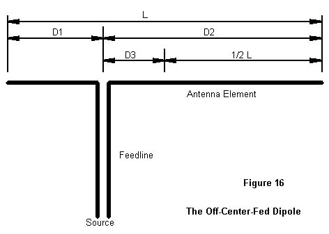
Figure 16 shows the general layout of an off-center-fed half wavelength wire antenna. As is the case with resonant center-fed dipoles, formulas for cutting the antenna abound--and occasionally work for someone. However, they are as imprecise as ever, so I shall not even list them. Instead, let's look at some results of modeling off-center-fed (OCF) antennas at 7.15 MHz.
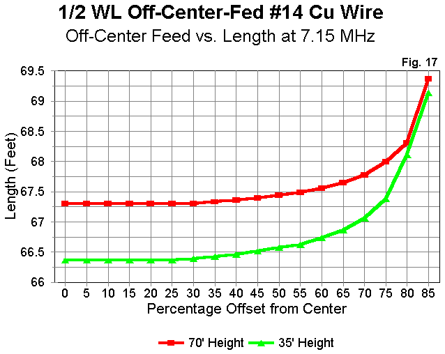
1. As shown in Figure 17, the resonant length of an OCF varies both with the antenna height and the distance from center it is fed. Hence, there is no magic length for an OCF.
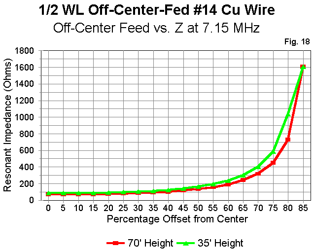
2. Two popular points of feeding an OCF are the 100 ohms and the 300 ohms points. These points exist only if we do not model the feedline attached to the antenna wire. As Figure 18 demonstrates, these point vary considerably as antenna height is varied, even if the antenna is resonated for each test point. Notice that the hypothetical 300 ohms feedpoint occurs on a quite steep portion of the curve, and actually hitting this point is a test of luck, not skill. Hitting something close to 100 ohms is easier, but something of an illusion.
The reason I call the feedpoints illusory is that the feedline of an OCF will always be unbalanced. Therefore, it becomes a part of the antenna, at least to the degree that the feedline radiates. A large portion of the feedline currents are equal and opposite, so the feedline contributes only in small ways to overall radiation, but even a little radiation will throw the anticipated impedance point well off its mark.
3. The resonant lengths of an OCF on even harmonics are different than the resonant length of an OCF on its fundamental frequency of operation. The result is an antenna that exhibits considerable reactance at harmonics of the fundamental.
To create an OCF that provides a reasonable match to coax at the fundamental and even harmonics requires some significant efforts to smooth out the impedance problems. It is possible to do this advertently or inadvertently. B&W offers a doublet with a coax match on all HF bands by the express use of a parallel resistance across the feedpoint. This resistive element trades loss (around half power) for convenience, a trade that may fit military QRO needs, but which is not especially apt to QRP operations. It is also possible to insert matching or isolating elements at the feedpoint, elements which one may never realize are as lossy on some bands as B&W's resistor. The safest rule of thumb to follow appears to be this: if the match claim is too good, the matching system likely ain't.
4. Feedline radiation contributes little to the radiation pattern of the OCF on most frequencies. Most modeling studies of feedline radiation are flawed, because they assume that the feedline or the jacket of a length of coax is as much a part of the antenna element system as the main wire itself. This is easily disproved by the number of folks who successfully run coax to dipoles without a balun. Only under certain conditions, usually involving the angle between the wire and the feedline, does significant energy become coupled to the outside of a coax feedline.
For the OCF, the only way to model the system required modeling both the antenna wire and the parallel feedline. This produced very large models with long calculation periods. Nonetheless, the results showed a little modification of the basic patterns on some harmonics, but likely less than yard clutter was likely to induce.
Well, then the OCF is a bad wire antenna, right? Wrong, again! But, let us start all over again. Begin with a 135' long piece of wire, or thereabouts. Feed it off center--far enough off to be convenient to your shack but not so far off that you are nearly end-fed. Note that convenience to the shack is likely the best guide to the feedpoint. Use 300 ohm or 450 ohm feedline with no isolators, baluns, transformers, "special couplers," or other devices. Bring the feedline to a balanced tuner. Now operate. What can you expect?
See the "Antennas From the Ground Up" series for Low Down ("6. Unbalanced But Sane, or a 135' Off-Center-Fed Multi-Band Dipole Data Compendium") for the contents of Figure 19, which presents a compendium of patterns for a 135' OCF model fed about 50' from one end (D1) and 85' from the other (D2) about 35' above average ground. Some patterns will differ as the feedpoint is drawn farther away from center, since the lengths on either side of the feedpoint will approach or depart from special relationships. (For example, on some band, the off-center feedpoint may approximate a full wavelength antenna fed 1/4 wl in from one end. This would be true for one possible feedpoint value, but not for others.) Feedpoint values shown are ballpark values and should not be used for precise guidance, since they do not take into account the effects of feedline radiation.
The patterns for multiband use of the OCF are not vastly different from those for the center-fed doublet of the same length, except where the special length relationships may be in effect on upper bands. Gain is within a dB of that for the doublets. (Note that calling the antenna a "beam" or even "better than a beam" is simply not justified, since it produces only what one expects a wire antenna to produce, given length and frequency.)
The bottom line on the OCF is that it is a highly usable wire antenna with multiband capability. Its most efficient performance is likely to result from the simplest possible construction. The performance is plenty good for a wire antenna of its length, but more than good wire performance is unlikely. It will remain unlikely so long as detailed modeling set-ups and labs tests remain hidden, if they exist at all, and as long as what does exist falls into the realm of advertising hype.
Let's End With the Zepp
We have fed in the middle. We have fed to the side. Let's now take the final step and feed at the end. The antenna has been called the Zepp, Zeppelin, or end-fed Zepp. (The last arose when some writers called the 135' doublet a "center-fed Zepp.") Initially, the antenna was just a long piece of wire, end fed and trailing out the rear of the zeppelin. Feeding was relatively easy with direct connections to the output tanks of high impedance tube amplifiers. Ground operators added feedlines and produced the antenna that appears in Figure 20. Some argue on theoretical grounds that the antenna cannot work, but folks keep on building and successfully using this odd little antenna that never wants to get near to a piece of low impedance coax.
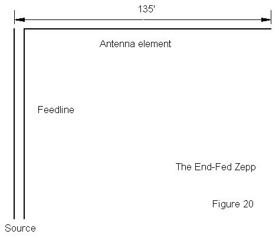
Actually, the antenna wire part is simple. It is a half wavelength of wire on its fundamental frequency, and the current distribution is identical to that of a center-fed antenna of the same length. The low-current, high- voltage feedpoint presents a very high impedance, requiring the use of parallel feedline.
How can you feed an antenna when one side of the line is connected to nothing and the other is connected to an antenna of finite length? The lines must be radically unbalanced! Actually, the imbalance is not at all severe. First, the connection to nothing is not to absolute nothing, so the end of the open side of the line exhibits an extremely high but finite impedance. Likewise, the connected side of the line sees a super high impedance--and two highs make a pretty good balance.
Pretty good, but not perfect. However, precisely the imbalance remaining on the line--which yields some minor line radiation--permits the antenna to be matched at the shack end of the feedline. If the balance had been perfect, the feedpoint impedances on most bands would consist of thousands of ohms of resistance combined with thousands of ohms of reactance. Under these conditions, the impedance along most of the feedline would look like a more extreme version of Figure 21. The reactance would be low for much of each half wavelength of line, but the resistance would be even lower, with values less than 1 ohm in many instances.
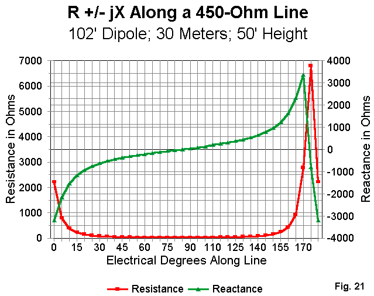
Fortunately, the balance is not perfect. What the ATU is likely to see are values that are quite reasonably matched. Again, a good old-fashioned inductively coupled tuner is likely the best bet for the end-fed Zepp.
See the "Antennas From the Ground Up" series for Low Down ("12. A Tiger by the Tail, or a 135' End-Fed Multi-Band Dipole Data Compendium") for the contents of Figure 22. What do we get for our end-fed trouble? Figure 22 tells most of the story: we get a multiband wire antenna where the lobes increase with frequency and the gain moves from broadside to off the end of the wire as the frequency increases. This familiar motif differs only in detail from the summary remarks about the other two 135' antennas we have examined in detail.
Summary
We have looked at low-lying dipoles and at wires used for multiband purposes for two good reasons. First, basic information is necessary to dispel novice mythology about dipoles and other wire antennas. Second, we have wanted to leave behind some compendia of antenna patterns to set some proper expectations for future antenna building.
We could go on for days looking at all the many ingenious wire set-ups that hams have invented over the years. Most of these antennas are designed to overcome circumstantial limitations. Whatever their designers have thought of them, they have brought no real improvements upon the dipole and its multiband counterparts. In fact, it is difficult to beat a wire doublet as high as one can get it--difficult, that is, without access to federal grants, crown jewels, or Superman's cape.
Wire does have some disadvantages that we just have to admit. It is very difficult to rotate a wire dipole or beam--something like pushing rope. However, I can install three wire antennas for far less than the cost of one modest rotator, let along the cost of the tower and beam. Wire looks--well, so Novice! It lacks all the electromechanical glint and sophistication that we associate with beams. Of course, a broken wire antenna is invisible on the ground, while a broken beam transforms a backyard into a junk yard of embarrassment. And I do not have to take a bank loan to replace my wire antenna.
Just be sure you construct your antenna well. I am convinced that people believe that some of the commercial wire antennas work "better" simply because they did not spend the same construction care on their $30 home brew job that they spent on the $150 prepackaged antenna of the same design. A wire antenna has three dimensions. First is the electrical: make sure all connections are electrically sound and durable. Second is the mechanical: use sound principles of mechanical security at physical connections and stress points. Third is maintenance: erect your antenna with an eye toward lowering it a couple of times a year to check both electrical and mechanical connections, and to clean the wire and transmission line. Some folks like auto polish on both to shed the rain and to restore a little glint in the setting sun.
The basic wire is long. The basic wire is as full size as we can make it. It is so basic that it does not need magic to make it work. But work it does. And when it falls down--despite our best maintenance efforts--it is cheap to reinstall. And it goes on working. Now you know why we are using wire--at least until the ship comes in carrying the professional installers and the 200' tower, rotator, and combined 80-40-30 meter quad.
Updated 1-19-98. © L. B. Cebik, W4RNL. Data may be used for personal purposes, but may not be reproduced for publication in print or any other medium without permission of the author.
 Return to Amateur Radio Page
Return to Amateur Radio Page